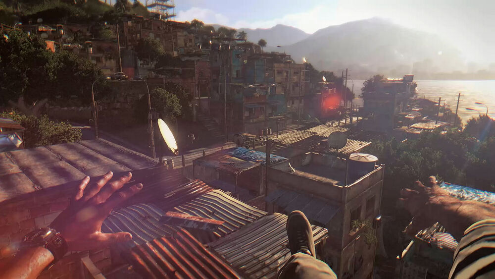

Игровая механика
и ее описания
Паркур
Парку́р (англ. Freerunning[1]) — геймплейный элемент, представленный в серии Dying Light. Это одна из основных механик в играх франшизы, которой уделено особое внимание. Паркур был введён в игру с целью избавления от искусственных барьеров, которыми грешат многие шутеры от первого лица, когда главный герой не может перепрыгнуть забор высотой с колено и вынужден его оббегать. Также разработчики хотели сделать мир, в котором игрок мог бы чувствовать себя свободным: сражаться ли ему или же избежать сражения. Систему, которая сканирует пространство в реальном времени и по нескольким критериям определяет, может ли игрок забраться на объект или как-то с ним взаимодействовать, придумал программист игры Бартош Кулён.
Описания
Паркур — акробатическая и атлетическая способность плавно перемещаться по окружающей среде, используемая игроком, чтобы быстро добираться до нужных точек в пределах города Харрана. При выполнении паркурных трюков вы можете бегать, прыгать и подтягиваться на элементы окружения, безболезненно приземляться с большой высоты и выживать при выполнении всего вышеперечисленного, если не допускать серьёзных ошибок. В игре данная способность, в основном, используется паркурщиками из Башни. По сюжету оперативник ВГМ Кайл Крейн (протагонист игры) обучается паркуру у Рахима, который показывает ему самые основы, такие как бег и прыжки, преодоление препятствий, прыжки с одних объектов на другие и так далее. Как игрок, для быстрого перемещения используйте спринт и прыжки. Используя спринт, вы можете бегать с высокой скоростью столько, сколько позволяет ваша выносливость. Прыжки позволяют вам взбираться по элементам окружения, цепляться за них и выполнять основные паркурные трюки. Паркур позволяет вам использовать особенности ландшафта, свободно перемещаясь по сооружениям, таким как крыши, карнизы, фонари и так далее. В начале игры рекомендуется практиковаться в паркурных умениях, изучая, на что можно забраться и на чём можно повиснуть — и выжить. Игрок может спрыгивать с элементов окружения, когда он на них висит, так, существует несколько способов двигаться дальше, даже если и кажется, что больше хвататься не за что. Посмотрите вверх и по сторонам: это может помочь найти место, за которое вы зацепитесь и отправитесь дальше, прежде чем решите, что дальше вам путь закрыт. Выполняя прыжки, зажмите соответствующую кнопку — так Крейн зацепится за всё, на что приземлится. Повороты камеры дают игре узнать, на что игрок пытается забраться. Это содействует тому, что игрок забирается на элементы окружения. Также рекомендуется потренироваться заранее, если вам нужно будет откуда-то сбежать. Например, посмотрите на верх стены, приближаясь к ней, затем прыгните и подтянитесь: так игрок при скачке ухватится за стену и легко поднимется вверх. Также рекомендуется соблюдать осторожность при падении: приземляясь на такие элементы окружения, как мешки с мусором, тенты и крыши автомобилей, вы переживёте стремительное снижение, однако в остальных случаях вы получите урон или даже погибнете, поэтому цельтесь аккуратнее. Урон при падении с умеренно-большой высоты можно сгладить навыком «Перекат», однако при падении с очень больших высот его выполнение невозможно.
